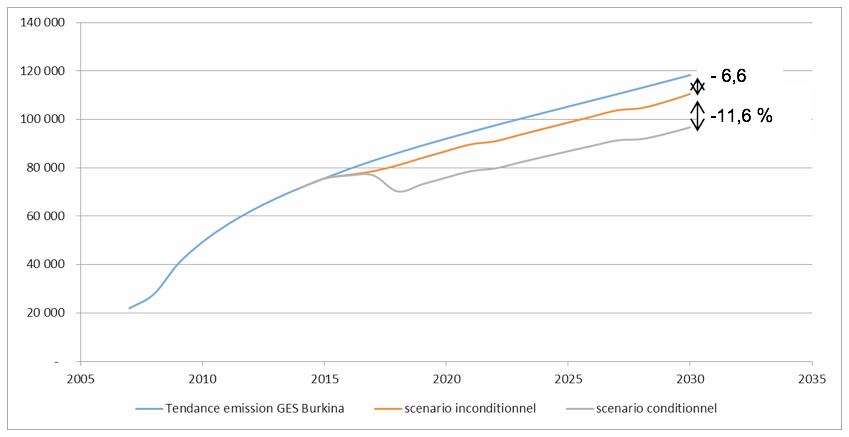
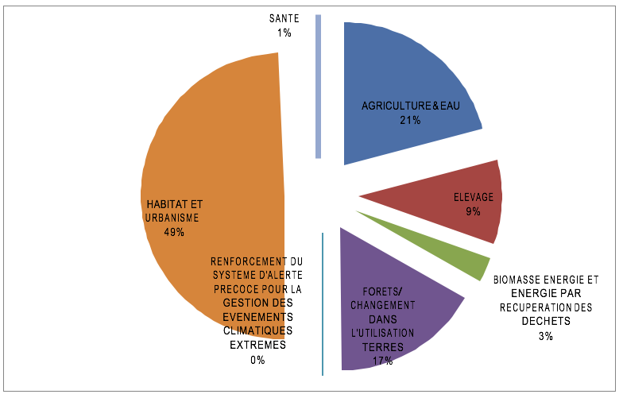

Septembre 2015
La France accueillera la vingt-et-unième Conférence des Parties de la Convention-cadre des Nations Unies sur les changements climatiques (COP21/CMP21), qui se tiendra à Paris en Décembre 2015 et qui devrait aboutir à un nouvel accord international sur le climat, applicable à tous les pays. L’ensemble de la communauté internationale attend de cet accord qu’il soit universel et durable. Il devra donner les signaux économiques et politiques, pour que le modèle de développement économique de notre planète s’engage sur une nouvelle trajectoire, menant à la neutralité carbone avant la fin du siècle, ainsi qu’au respect de l’objectif des 2°C, c’est-à-dire le maintien du réchauffement global des températures sous la barre des +2°C).
La COP21, du 30 novembre au 11 décembre 2015, vise principalement à conclure un accord engageant 195 États à réduire leurs émissions de gaz à effet de serre ou GES. L'objectif final est que les contributions de ces États (différentes d'un pays à un autre) permettent de stabiliser le réchauffement climatique dû aux activités humaines en deçà de 2°C d’ici à 2100 (par rapport à la température de l’ère préindustrielle). Chaque pays remettra ses engagements à la Convention Cadre Climat (UNFCCC)dans un document appelé Intended Nationally Determined Contributions ou INDC d'ici la fin octobre 2015.
Les contributions nationales regroupent 2 types d’objectifs :
La contribution aux objectifs de ce second volet est volontaire, cependant significative au Burkina Faso et donc nécessaire à présenter en scenario distinct: Adaptation Intégrée.
Encadré #1
Selon le Ministère en charge du développement durable, les principes sur lesquels reposent les contributions nationales sont :
Ambition: les contributions ont vocation à dépasser les engagements actuels des États. Les engagements actuels s’inscrivent dans le cadre de la deuxième période d’engagement du Protocole de Kyoto – c’est notamment le cas pour l’Union Européenne, ou bien correspondent aux actions nationales volontaires souscrites au titre de l’accord de Copenhague et des accords de Cancun.
Equité et Différenciation: Les contributions sont examinées en tenant compte des circonstances nationales propres à chaque pays. Les pays les moins avancés et les petits États insulaires bénéficient notamment d’une certaine flexibilité dans l’élaboration de leur INDC compte tenu de leur capacité limitée.
Transparence: Les contributions qui ont été communiquées par les États sont publiées au fur et à mesure sur le site de l’UNFCCC. Une syntdèse agrégeant l’ensemble des contributions des parties sera présentée par le secrétariat de la CCNUCC le 1er novembre 2015 sur la base des INDC reçues au 1er octobre.
Les « états généraux de l’environnement et du développement durable » au Burkina Faso, tenus en novembre 2011, ont fortement recommandé l’élaboration d’une Politique Nationale de Développement Durable (PNDD) assortie d’une loi. Elaborée en 2013, la PNDD encadre efficacement la Stratégie de Croissance Accélérée et de Développement Durable (SCADD). Avec ce document de cadrage économique qu’est la SCADD, qui, est également juxtaposée à la « Prospective Burkina 2025 », les instruments cadres de politique contribuent à mettre la notion de durabilité au cœur de l’action publique et des autres acteurs non étatiques (PTF, ONG, OSC, Secteur privé) dans un élan de développement socioéconomique générateur de croissance et de revenus équitablement distribués à moyen et long termes et dans des secteurs de haute vulnérabilité climatique tels qu‘identifiés par la Communication nationale.
Le Burkina Faso a ratifié la CCNUCC et le protocole de Kyoto respectivement en septembre 1993 et mars 2005. A ce jour, il a élaboré et adopté plusieurs documents de politiques et de stratégies relatifs aux changements climatiques, en réponse à certaines dispositions de ces protocoles. On peut, entre autres, citer:
Pour la prise en charge et le suivi des questions des changements climatiques, on retient la création au sein du Ministère en charge de l’environnement du Secrétariat Permanentdu Conseil National pour la Gestion de l’Environnement(SP/CONAGESE), qui sera transformé en SP/CONEDD (Conseil National pour l’Environnement et le Développement Durable) avec des missions élargies.
En 1995, le Burkina Faso a mis en place le Comité Interministériel pour la Mise en œuvre des Actions de la Convention-Cadre des Nations Unies sur les Changements Climatiques (CIMAC). Ce comité a été pleinement impliqué dans l’élaboration de la Communication Nationale Initiale sur les changements climatiques.
Faceà la dégradation des écosystèmes, à la récurrence des crises alimentaires et aux effets néfastes des changements climatiques sur l’environnement, les populations et le cheptel, le Gouvernement du Burkina Faso, avec l’appui du PNUD en tant qu’agence d'exécution du Fonds pour l'Environnement Mondial (FEM), a initié en 2005 la formulation de son Programme d’Action National d’Adaptation (PANA) à la variabilité et aux Changements Climatiques. Le PANA a été adopté au niveau national en novembre 2007. Dans ce cadre, et sous le leadership du SP/CONEDD, trois projets d'adaptation ont été élaborés et exécutés entre 2008 et 2013, avec l’appui des Coopérations danoise et japonaise et celui du Fonds pour l’Environnement Mondial (FEM). Le PANA répondait ainsi à une situation urgente où l’adaptation visait principalement les plus vulnérables, notamment les populations rurales.
Afin de valoriser les acquis de la mise en œuvre des trois projets d’une part, de répondre aux préoccupations de la Convention et d’élargir le plan à toutes les parties prenantes du développement d’autre part, le Burkina a élaboré un Plan National d’Adaptation (PNA) qui est bâti autour des résultats de l’analyse de la vulnérabilité aux changements climatiques des secteurs prioritaires identifiés (agriculture, élevage, eau, forêts et écosystèmes naturels, énergie, infrastructures et habitat, santé…) et des scénarii des changements climatiques aux horizons 2025-2050.
Le besoin d’évaluation quantitative du potentiel d’atténuation a conduit le Burkina Faso à élaborer un cadre NAMA en 2008, en l’occurrence le Programme Nationale du Secteur Rural (PNSR). Le PNSRs’inscrit dans la dynamique de programmation du développement à court, moyen et long terme, traduite par la conduite de l’Etude prospective Burkina 2025, l’élaboration du Schéma National d’Aménagement du Territoire (SNAT) et plus récemment (2010), par l’adoption de la Stratégie de Croissance Accélérée et de Développement Durable (SCADD) en lieu et place du Cadre Stratégique de Lutte contre la Pauvreté (CSLP).
Le PNSR qui vise l’horizon 2015 est une fédération des programmes sectoriels des départements de l’agriculture, de l’élevage, de l’eau, de l’environnement et du cadre de vie. Dans ce cadre, le potentiel d’atténuation pour la période 2008-2015 a été estimé à 9 174 816 TéqCO2 de GES soit 1 200 000 TéqCO2/an.
Les mesures d’atténuation proposées participent à l’atteinte des objectifs du Gouvernement à savoir la restauration des terres dégradées à raison de 30 000 ha/an, l’accroissement des superficies des plantations de 68 000 à 100 000 ha/an, l’accroissement des forêts naturelles de 170 000 à 500 000 ha, la réduction des superficies des forêts brûlées par les feux sauvages de 30 % du territoire national à 20 %, l’aménagement des zones cynégétiques villageoises par la sensibilisation et la formation des populations, et la diffusion des connaissances concernant les techniques relatives à la gestion durable des ressources naturelles.
En application des articles 4 et 12 de la Convention-Cadre des Nations Unies sur les Changements Climatiques (CCNUCC), le Burkina Faso a procédéà l’élaboration d’une Communication Nationale contenant les mesures visant à atténuer ou à faciliter une adaptation appropriée aux changements climatiques.C’est dans ce cadre que fut élaboré en 2014 la Deuxième Communication nationale, conformément aux directives de ladécision 17/CP 8 adoptée par la huitième session de la Conférence des Parties à la CCNUCC. Le processus de son élaboration ayant commencé depuis 2006, les données d’inventaires prennent appui sur des données de 2007 comme année de référence. Faisant l’état des changements climatiques, la Deuxième Communication nationale complète et met à jour certaines données déjà portées à la connaissance de la communauté internationale dans la Communication initiale de 2001 que le site web de la CCNUCC réfère à Mai 2002.
L'INDC du Burkina, pays faible émetteur, est l’un des rares qui présente les deux caractéristiques des INDC, voire une approche résultats (outcomes) et une approche actions/projets/activités.
Cela se traduit par une composanteAtténuation qui ne prend en considération que les activités qui amènent à des résultats d'émissions crédités dont les objectifs ont été dès le départ orientés surla réduction des émissions de Gaz à Effet de Serre et en particulier de carbone équivalent. Un exemple de ces initiatives sont les REDD + / PIF, l'initiative NAMA et des projets potentiels MDP dans des secteurs porteurs comme pour le Minier. C’est à partir de ces initiatives consacrées principalementà la réduction des gaz à effet de serre que le scénario Conditionnel hybride Atténuation /(Adaptation) est constitué.
L’INDC du Burkina comporte par ailleurs toute une composante Adaptationqui rend cet INDC quelque peu unique et ambitieux ; car l’analyse des options d’adaptation avec ses investissements particuliers et ses secteurs ‘’vulnérables’’ à la recherche de résilience a menéà un Scénario Adaptation Intégrée. C'est dans cette composante qu’une approche Projets / Activités / Actions se dégage. Elle se justifie hautement par le fait que le « secteur rural », constitué des sous-secteurs Eau- Agriculture-Forêts-Utilisation des Terres (A.FO.LU) est à la fois le principal moteur de l’économie burkinabè (il fait vivre plus de 80% de la population) mais aussi le secteur le plus vulnérable aux effets du changement climatique.
Cette composante est ainsi constituée de projets dont l'objectif n'est pas PRINCIPALEMENTla réduction des GES (par la séquestration du carbone notamment) mais surtout la valorisation de services environnementaux tels que la sécurité alimentaire, la conservation des eaux et des sols, l'agriculture durable, la valorisation des produits forestiers non ligneux y compris les plantes médicinales, la promotion d’une architecture sans bois ni tôle (voûtes nubiennes), etc.Comme un bonus à la composante atténuation, ces projets résultent sur le moyen et long termeà des réductions considérables en GES qui dépassent même les résultats des efforts d’atténuation.
L’équipe « Atténuation » a réalisé ses travaux sur la base de la métdodologie suivante:
Cette métdodologie se traduit dans le rapport comme suit:
Le tableau syntdèse suivant met l’emphase résume les scenarii en Atténuation.
Tableau 1. Réduction des émissions et coûts d'investissements associés suivants les scenarii d'atténuation
|
Scenarii / secteurs |
Réduction des émissions à l'horizon2030 |
Cout d'Investissement(en US$) |
|
|
En chiffre (Gg) |
en % de réduction |
||
|
BaU (sous total) : |
118 323 |
||
|
Inconditionnel |
|||
|
Agriculture |
7 236,3 |
6,1% |
21 646 581 |
|
Déchets |
- |
||
|
énergie |
572,0 |
0,5% |
1 063 272 580 |
|
S/total Inconditionnel |
7 808,3 |
6,6% |
1 084 919 161 |
|
Conditionnel |
|||
|
Agriculture |
10 560 |
8,9% |
64 939 743 |
|
Déchets |
76,30 |
0,1% |
81 228 000 |
|
énergie |
3 130,00 |
2,6% |
609 866 667 |
|
S/Total Conditionnel Hybride |
13 766,30 |
11,6% |
756 034 410 |
|
S/Total Atténuation |
21 574,63 |
18,2% |
1 840 953 571 |
Source, Compilation Auteurs, juillet 2015.
Trois scenarios ont été donc considérés en Atténuation pour évaluer l’évolution des émissions et les réductions possibles à partir d’une situation de référence et du potentiel de financement:
L’année de référence retenue est 2007, date de la finalisation du deuxième rapport des inventaires des gaz à effet de serre au Burkina Faso. Les projections vers le futur, selon différents scénarios, sont faites à partir de cette année de base et des paramètres appropriés résultants de l’évolution antérieure du système socio-économique (tendanciel) ou les hypotdèses de la prévision (scénarios inconditionnel et conditionnel).
Le Burkina a choisi 2030comme cible étant donné que cette date coïncide avec le deuxième rendez- vous des OMD. Par ailleurs, le Gouvernement du Burkina Faso a adhéré à l’Initiative ″Energie Durable Pour Tous (SE4ALL) ″ du Secrétaire Général des Nations Unies qui vise à atteindre, d’ici 2030, trois objectifs majeurs:
Les paramètres susceptibles d’influer sur la trajectoire des tendances ont été passés en revues. De concert avec les structures en charge des statistiques,en l’occurrence l’Institut National des statistiques et de la Démographie, les paramètres suivants ont été retenus pour leur pertinence.
Tableau 2. Types d'émissions de GES selon les tendances sectorielles
|
Secteurs |
GES |
Paramètres de projection utilisés |
|
Tendance sols agricoles |
NO2 |
Évolution des importations d'intrant |
|
Tendance résidus agricoles brulés au champs+brulage contrôlé de savane |
NOX CO CO2 |
Tendance historique INSD |
|
Tendance fermentation entérique |
CH4 |
Taux de croissance du cheptel |
|
Tendance gestion du fumier |
CH4 |
Taux de croissance du cheptel |
|
Tendance changement d'affectation des terres et foresterie |
CO2 CH4 N2O NOX CO |
Tendance historique INSD |
|
Tendance gestion déchets liquides |
CH4 |
Taux de croissance de la population |
|
Tendance gestion déchets solides |
CH4 |
Taux de croissance de la population |
|
Tendance transport |
CO2 |
Évolution importation carburant |
|
Tendance production électricité |
CO2 |
Tendance évolution |
|
Tendance industries manufacturières |
CO2 |
Taux de croissance PIB industrielle |
|
Tendance résidentielle |
CO2 |
Taux de croit du gaz butane et du pétrole lampant |
|
Tendance processus industriels |
CO2 |
Tendance historique INSD |
Source: Auteurs, juillet 2015.
La situation de référence est celle de la deuxième Communication Nationale du Burkina Faso, 2014 (dont les inventaires de GES prennent référence sur les données de l’année 2007) dans le cadre de la CCNUCC et dont le tableau 3 ci-contre constitue une récapitulation significative (émissions totales et relatives par source d’émission).
Tableau 3. Situation de référence des émissions des GES
|
Catégorie |
Principaux gaz émis |
émissions GES (Gg) 2007 |
En pourcentage du total des émissions |
|
Sols agricoles |
N2O |
8 239 |
37,6% |
|
Fermentation entérique |
CH4 |
9 517 |
43,4% |
|
Résidu agricole brûlé aux champs + brûlage contrôlé de savane |
CO2, NOX, CO |
189 |
0,9% |
|
Gestion du fumier |
CH4 |
1 196 |
5,5% |
|
Changement d'affectation des terres et foresterie |
CO2, CH4, N2O, NOX, CO |
250 |
1,1% |
|
Gestion des déchets solides |
CH4 |
667 |
3,0% |
|
Gestion des eauxliquides |
CH5 |
245 |
1,1% |
|
Transport |
CO2 |
782 |
3,6% |
|
Production électricité |
CO2 |
350 |
1,6% |
|
Résidentiel |
CO2 |
60 |
0,3% |
|
Tendance industries manufacturières |
CO2 |
118 |
0,5% |
|
Processus industriels |
CO2 |
303 |
1,4% |
|
GES Total pays |
21 916 |
100% |
Source: Communication Nationale du Burkina Faso, 2014.
L’analyse du scenario tendanciel montre que les émissions de GES du Burkina vont continuer à croitre de manière substantielle. A l’horizon 2030 le niveau des émissions sera multiplié par cinq comparativement à celle de l’année 2007 et quasiment par 1.6 comparativement à 2015 (tableau 4 ci-dessous).
Tableau 4. Evaluation globale tendancielle de l’état des GES de 2007 à 2030
|
Émissions GES par catégorie (Gg de CO2 par eq) |
2007 |
2015 |
2020 |
2025 |
2030 |
|
Tendance secteur agriculture, foresterie et land use |
19 391 |
71 436 |
85 545 |
95 561 |
103 424 |
|
Gestion des déchets solides |
667 |
852 |
993 |
1 156 |
1 347 |
|
Gestion des eauxliquides |
245 |
313 |
364 |
424 |
494 |
|
Tendance transport |
782 |
1 447 |
2 439 |
4 110 |
6 925 |
|
Tendance production électricité |
350 |
648 |
1 476 |
2 487 |
4 191 |
|
Tendance « Résidentiel » |
60 |
96 |
128 |
172 |
230 |
|
Tendance industries manufacturières |
118 |
175 |
223 |
285 |
363 |
|
Tendance processus industriels |
303 |
667 |
894 |
1 121 |
1 348 |
|
Total |
21 916 |
75 633 |
92 062 |
105 316 |
118 323 |
Source: Auteurs, juillet 2015.
Au regard des projets et programmes retenus dans le scénario inconditionnel et conditionnel, les résultats des projections donnent, ci-après, la part des réductions opérées par rapport au scénario tendanciel, aussi appelé « Business as Usual » (BAU). Il convient, en effet, de rappeler, qu’à l’instar de plusieurs pays en développement la faible appropriation et de maîtrise des technologies est concomitante du niveau très bas de développement du pays comme le Burkina Faso et de la faiblesse de ses émissions de GES. En dépit des efforts, l’urgence à faire face à des situations de crise récurrente dans plusieurs secteurs appelle l’utilisation de technologies disponibles sur le marché et à moindre coût, bien souvent moins appropriées à la protection de l’environnement local ou global (centrales tdermiques d’urgence financées très souvent lors de grands délestages et de mouvements sociaux, dépendance vis-à-vis des moyens de transport obsolètes ailleurs, techniques agricoles à faibles intrants technologiques et consommatrices d’espace et de main d’œuvre, faible gestion des déchets, etc.). D’où la préférence à penser les réductions de GES par rapport à une tendance possible que par rapport à une année de référence qui nous paraît peu réaliste.
Le tableau 5 et la figure 1 ci-dessous illustrent l’évolution des émissions des GES selon les trois scenarii adoptés.
Tableau 5. Evolution des émissions (BaU) et part de réduction selon les scenarii
| 2007 | 2015 | 2020 | 2025 | 2030 | |
| BaU (en Gg) | 21 916 | 75 633 | 92 062 | 105 316 | 118 323 |
| Scénario inconditionnel (réduction en Gg) | - | 5 133 | 6 608 | 7 808 | |
| Scénario inconditionnel (réduction en %) | 0% | 5,58% | 6,27% | 6,60% | |
| Scénario conditionnel (réduction en Gg) | 10 953 | 11 829 | 13 766 | ||
| Scénario conditionnel (réduction en %) | 0% | 11,90% | 11,20% | 11,60% |
Source: Auteurs, juillet 2015.
Figure 1. Illustration des tendances d’émissions des GES en différents scenarii

Le tableau 6 ci-dessous donne une désagrégation des réductions du scénario inconditionnel. On note que l’atténuation sectorielle est principalement due aux projets et programmes dans l’Agriculture, la Foresterie et les changements d’affectation des sols (entre 6 et 7% de 2020 à 2030), les choix technologiques dans l’industrie électrique (entre 20 et 12% de 2020 à 2030) et à l’efficacité énergétique dans les industries manufacturières (3%.respectivement en 2020 et 2030). Les réductions mentionnées ici sont relatives à la tendance BAU du secteur.
Tableau 6. Désagrégation des réductions des GES (Gg et %) du scénario inconditionnel par rapport au tendanciel
| Années | 2015 | 2020 | 2025 | 2030 | ||||
| Secteur d'activités | Gigagrames | % | Gigagrames | % | Gigagrames | % | Gigagrames | % |
| Agriculture, foresterie et utilisation des sols | - | 0% | -4,809 | -6% | -6,209 | -6% | -7,236 | -7% |
| Déchets solides | - | - | - | – | ||||
| Transport | -5,86 | -0,40% | 29,3 | -1,20% | 29,3 | -0,71% | 29,3 | -0,42% |
| Production d'électricité | 22,18 | 284,3 | -19,26% | 344,4 | -13,85% | 493,04 | -11,76% | |
| Résidentiel | 0,36 | -0,37% | 10,38 | -8,10% | 25,62 | -14,93% | 49,71 | -21,65% |
| Energie dans les industries manufacturières | 5,24 | -3,00% | 6,69 | -3,00% | 8,54 | -3,00% | 10,9 | -3,00% |
Source: Auteurs, juillet 2015
De manière similaire, le tableau 7 ci-dessous donne une désagrégation des réductions du scénario conditionnel. On note qu’en 2030 et toujours par rapport au scénario tendanciel, l’atténuation sectorielle proviendrait principalement des projets et programmes dans l’Agriculture, la Foresterie et les changements d’affectation des sols (10% de réduction par rapport à la tendance sectorielle, d’une moindre consommation des hydrocarbures dans les transports (42%), les choix technologiques dans l’industrie électrique (4%) et de l’efficacité dans le résidentiel et le tertiaire (21%) due à un remplacement massif de l’éclairage traditionnel par l’introduction des lampes basse consommation. Les réductions mentionnées ici sont relatives à la tendance BAU du secteur.
Tableau 7. Désagrégation des réductions des GES (Gg et %) du scénario conditionnel par rapport au tendanciel
| Années | 2015 | 2020 | 2025 | 2030 | ||||
| Secteur d'activités | Gigagrames | % | Gigagrames | % | Gigagrames | % | Gigagrames | % |
| Agriculture, foresterie et utilisation des sols | - | 0% | -10,560 | 12% | -10,560 | 11% | -10,560 | 10% |
| Déchets solides | - | -60 | -4% | -75 | -5% | -76,3 | -4% | |
| Transport | 244 | -10% | 1069 | -26% | 2911 | -42% | ||
| Production d'électricité | 22,18 | -3% | 73,87 | -5% | 94,10 | -4% | 162,80 | -4% |
| Résidentiel | 10,02 | -8% | 25,26 | -15% | 49,35 | -21% | ||
| Energie dans les industries manufacturières | 3,53 | -2% | 4,49 | -2% | 5,72 | -2% | 7,30 | -2% |
Source: Auteurs, juillet 2015
Au cours des quinze dernières années, le Burkina est resté en tête des pays de l’Union économique et monétaire ouest-africaine (UEMOA) avec une croissance moyenne annuelle de 5,5 %, et ce en dépit de divers chocs exogènes. L’économie Burkinabé est fortement dominée par l’agriculture qui occupe près de 80 % de la population active. Le coton est la culture de rente la plus importante pour le pays. L’essentiel des émissions des gaz à effet de serre dans le secteur de l’agriculture provient des catégories de la fermentation entérique et des solsagricoles.
En 2007, le secteur de l’agriculture a contribué à 88 % des émissions de GES au niveau national. L’élevage, à travers l’activité de fermentation entérique, est la catégorie qui contribue le plus aux émissions de GES (près de la moitié annuellement). Les sols agricoles occupent le second rang en termes de contribution à ces émissions.
De façon globale, la planification du développement s’appuie sur la Stratégie de Croissance Accélérée et de Développement Durable(SCADD). L’économie du Burkina Faso a été depuis le départ basée sur le secteur primaire, secteur le plus exposé depuis plus de 40 ans maintenant aux effets de la variabilité du climat et considéré aujourd’hui comme le plus vulnérable aux changements du climat. C’est pourquoi le gouvernement du Burkina Faso a pris en chargede façon spécifique les questions de changement climatique depuis les grandes sécheresses des années ’70à travers une action soutenue de lutte contre la désertification qui frappe durement le monde rural.
En 2014, et dans le cadre du Programme National de Partenariat pour la Gestion Durable des Terres (CPP), le Burkina Faso a élaboré et validé un Cadre Stratégique d’Investissement en Gestion Durable des Terres (CSI-GDT). La vision en matière de gestion durable des terres (GDT) au Burkina Faso qui prend pour horizon de projection l’année 2025est la suivante: «des systèmes de production rurale durables qui, en prenant en compte les connaissances et les savoir-faire locaux, (i) préservent la fertilité des sols, (ii) augmentent la productivité végétale et animale par unité de surface exploitée et/ou par unité de volume d’eau consommée, (iii) améliorent le bien-être des populations vivant de la terre, (iv) restaurent et préservent l’intégrité et les fonctions des écosystèmes ».
Considéré comme un Plan d’Actions du PNSR dans le domaine de la Gestion Durable des Ressources Naturelles (GDRN), le CSI-GDT prend appui sur l’ensemble des programmes et actions prévus dans le cadre du PNSR, financés ou à la recherche de financement.
Les objectifs, les résultats et les produits attendus du CSI-GDT coïncident largement avec les tdématiques classées prioritaires du Plan National d’Adaptation (PNA). Parce qu’il a défini des ambitions quantitatives pour le pays à l’horizon 2025 dans les secteurs de la GDRN ainsi que leurs coûts, le CSI-GDT peut être considéré comme un plan d’action opérationnel en matière d’adaptation dans les secteurs de l’agriculture, de l’élevage, des forêts et de l’utilisation des terres, de la gestion de l’eau et de la biomasse-énergie.
Le plus grand souci pour le Burkina Faso, comme pour tout autre pays, est que les changements climatiques prévus pour les prochaines cinquante années sont déjà inévitables. Donc le premier intérêt de Burkina Faso, qui n'est pas un Etat grand émetteur de GES, est inévitablement d'améliorer la capacité des populations à s'adapter aux conditions qui existeront d'ici à 2025, 2030 ou 2050: une hausse significative de la température moyenne, des saisons sèches plus sévères, des saisons de pluie plus fortes et moins prévisibles, un problème croissant de sècheresse, la baisse de la nappe phréatique et une augmentation de la fréquence de certaines maladies. Le seul scenario auquel on devrait se préparer est la situation tendancielle, "business as usual" (« les affaires comme d’habitude »); parce que les effets climatiques auxquels le Burkina doit se confronter sont déjà entamés, et les impacts positifs des possibles actions d'atténuation à envisager dès maintenant, soit au niveau local soit au niveau global, ne se ressentiront qu'après le terme d'applicabilité de l'INDC (2030).
Les mesures d'adaptation prévus dans le PNA (Plan National d'Adaptation) du pays a pour objectifs de (i) réduire la vulnérabilité aux impacts des changements climatiques en développant des capacités d’adaptation et de résilience, (ii) faciliter l’intégration de l’adaptation aux changements climatiques, d’une manière cohérente, dans des politiques, des programmes ou des activités, nouveaux ou déjà existants, dans des processus particuliers de planification du développement et des stratégies au sein de secteurs pertinents et à différents niveaux.
À partir des actions d’adaptation identifiées dans le Plan National d’Adaptation pour les principaux secteurs vulnérables aux changements climatiques, il a été demandé aux experts nationaux (issus du secteur public, de la société civile et du secteur privé) participant à l’atelier de lancement et de consultation de la présente étude, de classer celles qu’ils jugent prioritaires au regard de leur connaissance du contexte environnemental et socio-économique du pays.L’exercice de classement étant à la fois individuel et collectif, il est supposé qu’une action recevant l'appui de plus de 50% des participants pourrait être considérée comme d'importance significative.Le résultat d’un tel exercice est présenté au tableau ci-après.
Tableau 8. Actions prioritaires dans le cadre des projets d’adaptation
|
Secteur |
Mesures d'adaptation préconisées |
Applicabilité sur le court, moyen ou long terme |
% des Participants donnant Priorité A Chaque Action |
||
|
1. GDT - Gestion durable des terres |
|||||
|
A3 |
Promotion de la gestion durable des terres (GDT)– Amélioration de l’accès à l’information climatique |
M |
88% |
||
|
Inclue: |
|||||
|
A1 |
Mise en culture de variétés précoces ou résistantes à la sécheresse |
C |
50% |
||
|
A2 |
Mise en œuvre de techniques de conservation des eaux et des sols (cordons pierreux, diguettes, diguettes filtrantes, terrasses, demi-lunes, agroforesterie, fixation des dunes, etc.) |
C |
50% |
||
|
A4 |
Pratique de la gestion intégrée de la fertilité des sols |
M |
50% |
||
|
Tout par moyen de: |
|||||
|
EA7 |
Élaboration de schémas directeurs d'aménagement et de gestion des eaux |
C |
50% |
||
|
EA2 |
Réalisation de retenues d'eau : construction de puits modernes, de forages à grand débit, de barrages; aménagements de mares ; dérivation de cours d'eau |
L |
75% |
||
|
E3 |
Aménagement des planset points d'eau pastoraux |
L |
69% |
||
|
E2 |
Délimitation et aménagement des zones à vocation pastorales |
M |
50% |
||
|
EA3 |
Lutte contre l'ensablement des plans d'eau |
L |
63% |
||
|
A6 |
Mise en œuvre de techniques d'irrigation économes en eau |
C |
56% |
||
|
ECO8 |
Développer des programmes de recherche sur la résilience des espèces forestières, fauniques et halieutiques |
L |
56% |
||
|
ECO7 |
Réhabilitation et préservation des zones humides |
L |
44% |
||
|
2. Foresterie |
|||||
|
F1 |
Mise en œuvre des bonnes pratiques forestières et agroforestières (coupe sélective du bois de feu, régénération naturelle assistée, défrichement contrôlé, etc.) |
C |
88% |
||
|
F6 |
La protection des berges des cours et plans d'eau |
M |
69% |
||
|
F4 |
Pratique de l'agroforesterie pour une gestion durable des ressources naturelles |
M |
56% |
||
|
Par moyen de: |
|||||
|
F2 |
Gestion Communautaire et Participative des ressources forestières, fauniques et halieutiques |
L |
56% |
||
|
3.énergie |
|||||
|
N3 |
Diversification des sources d'énergie (solaire, éolien, biogaz) |
M |
88% |
||
|
N6 |
Promotion des technologies d'économie d'énergie dans l'industrie et le bâtiment |
L |
63% |
||
|
4. éducation environnementale |
|||||
|
Eco1 |
Développement de l'éducation environnementale aussi bien dans les systèmes d'enseignement formel que les systèmes d'enseignementnon formel |
M |
63% |
||
|
5. Aliments |
|||||
|
SA10 |
Amélioration des métdodes de transformation et de conservation des aliments |
M |
56% |
||
Source: Auteurs, juillet 2015.
On remarquera, fort utilement, que les tdématiques classées comme prioritaires par les experts participants à l’atelier de consultation, coïncident presqu’en totalité avec les objectifs et actions développées et proposées dans le CadreStratégique d’Investissement pour la Gestion Durable des Terres (CSI-GDT) (cf1.1).
Le tableau 8 suivant, inspiré du modèle de mise à l’échelle des technologies de Gestion Durable des Terres (CILSS, 2015) résume les actions d’adaptation proposées dans le cadre de l’INDC pour les secteurs de l’agriculture et de la gestion de l’eau, de l’élevage, de la biomasse énergie, des forêts et des changements dans l’utilisation des terres en général (AFOLU).
Elles intègrent des actions transversales liées notamment à la recherche adaptative dans ces secteurs.
Le tableau 9quant à lui présente les actions d’adaptation dans les secteurs ou domaines de:
Les données de base servant à l’alimentation du modèle sont issues de la revue de la documentation pertinente disponible ou ont été fournies par les experts nationaux des départements ministériels compétents.
L’annexe 2 présente le détail des projets d’adaptation proposés pour l’INDC.
Tableau 9. Actions d’adaptation dans les secteurs AFOLU
| Les actions / projets d'adaptation | Technologi es correspon dantes | Cibles INDC | Régions cibles potentielles | Total Population concernée (2015) | Tonnes de CO2 séquestrés/ Economisés par an horizon 2030 | Coût de l'investissement en US$ : considérer 40% supplémentaire pour les coûts de mise en œuvre (IEC, administration, renforcement capacités, suivi-évaluation.) (coût constant 2015) | Retour sur investiss ement pour l’écono mie nationale: (%) | |||||
| Unité | 2020 | 2025 | 2030 | 2020 | 2025 | 2030 | ||||||
| Secteur Agriculture et gestion de l'eau | 385 350 000 | 770 700 000 | 1 156 050 000 | |||||||||
| 105.000 ha d'aménagement de CES chaque année pour la restauration ou le maintien de la fertilité des terres de culture | Zaï seul | Ha cumul | 75 000 | 150 000 | 225 000 | Nord; Centre-Nord; Sahel; nord de la Boucle du Mouhoun; nord de l'Est | 2 250 000 | 666 000 | 31 500 000 | 63 000 000 | 94 500 000 | 67 |
| Zaï + cordons pierreux | Ha cumul | 175 000 | 350 000 | 525 000 | Nord; Centre-Nord; Sahel; nord de la Boucle du Mouhoun; nord de l'Est | 5 250 000 | 1 554 000 | 122 500 000 | 245 000 000 | 367 500 000 | 45 | |
| Cordons pierreux végétalisés | Ha cumul | 225 000 | 450 000 | 675 000 | Toutes Régions sauf Cascades | 6 750 000 | 1 998 000 | 81 900 000 | 163 800 000 | 245 700 000 | 31 | |
| Cordons pierreux + Zaï + RNA | Ha cumul | 50 000 | 100 000 | 150 000 | Nord; Centre-Nord; Sahel; nord de la Boucle du Mouhoun; nord de l'Est | 1 500 000 | 444 000 | 40 250 000 | 80 500 000 | 120 750 000 | 39 | |
| 10.000 ha de micro-bassins (demi-lunes) chaque année pour la restauration de la fertilité des terres de culture | Demi-lunes agricoles (avec apport de fumier) | Ha cumul | 50 000 | 100 000 | 150 000 | Toutes régions avec Pluviométri e inférieure ou égale à 600 mm/an | 1 500 000 | 444 000 | 21 000 000 | 42 000 000 | 63 000 000 | 100 |
| 1.000 ha par an de bas-fonds sont aménagés et mis en valeur, associés au système de riziculture intensive (SRI) | SRI | Ha cumul | 5 000 | 10 000 | 15 000 | Grand-Ouest + toutes autres régions où riziculture irriguée | 500 000 | 44 400 | 2 800 000 | 5 600 000 | 8 400 000 | 188 |
| 1.000 kits d’irrigation «goutte à goutte» sont vulgarisés chaque année pour l’irrigation de 250 ha en production de haut rapport (cas oignon) | Irrigationgou tte à goutte | Ha cumul | 1 250 | 2 500 | 3 750 | Toutes Régions | 20 000 | 0 | 35 000 000 | 70 000 000 | 105 000 000 | 25 |
| 10 Unités d’Intensification des Productions Agricole à partir de forages à gros débit et utilisant des techniques innovantes d’irrigation sont créées chaque année au profit de Groupes de jeunes entrepreneurs agricoles(base pomme de terre ou melon) | Irrigationgou tte à goutte | Ha cumul | 1 000 | 2 000 | 3 000 | Régions grands aquifères souterrains | 12 000 | 0 | 50 400 000 | 100 800 000 | 151 200 000 | 42 |
| Secteur Elevage | 171 493 396 | 342 986 792 | 490 680 189 | |||||||||
| 75.000 ha de terres dégradées sont réhabilités chaque année à des fins sylvo-pastorales | Micro watersheds (half moons) Delfino ploughed + herbaceous and ligneous seedlings | Ha cumul | 375 000 | 750 000 | 1 125 000 | Nord; Centre- Nord; Sahel; nord de la Boucle du Mouhoun; nord de l'Est | 5 922 637 | 3 330 000 | 78 750 000 | 157 500 000 | 236 250 000 | 147 |
| 10.000 tonnes de fourrage grossier (foins et résidus de cultures) sont récoltés et stockés chaque année | Fauche et conservation de foin | Cumul tons MS | 50 000 | 100 000 | 150 000 | Nord; Centre- Nord; Sahel; nord de la Boucle du Mouhoun; nord de l'Est | 1 500 000 | NA | 5 943 396 | 11 886 792 | 17 830 189 | 45 |
| 5 zones d'intensification des productions animales sont mises en place sur le territoire national | Aménageme nt et équipement de zones stratégiques répondant aux besoins des périodes critiques | Unité | 1 | 2 | 2 | Est Sud-Ouest; Hauts-Bassins; Cascades; Centre-Ouest; Boucle du Mouhoun | 3 586 000 | 300 000 | 23 800 000 | 47 600 000 | 47 600 000 | 67 |
| 25 milliers de ménages en 2020 sont équipés de biodigesteurs fonctionnels dans au moins 10 régions du Burkina Faso | Biodigesteurs | Unité | 25 000 | 50 000 | 75 000 | Toutes régions | 1 500 000 | 300 000 | 45 500 000 | 91 000 000 | 136 500 000 | 104 |
| Le compost issu des bio digesteurs servent à fertiliser 750 000 ha de terres cultivables (un biodigesteur permet de fertiliser 10 à 12 ha) | Fertilisation organique des terres de culture | Ha | 250 000 | 500 000 | 750 000 | Toutes régions | 3 750 000 | 1 500 000 | 17 500 000 | 35 000 000 | 52 500 000 | 450 |
| Secteur Biomasse Energie | 29 232 000 | 41 440 000 | 87 696 000 | |||||||||
| 540 milliers de foyers améliorés sont produits et diffusés dont au moins 50% en milieu urbain et semi-urbain. | Foyers améliorés ménages | Unité | 180 000 | 350 000 | 540 000 | Toutes régions | 2 700 000 | 610 200 | 4 032 000 | 7 840 000 | 12 096 000 | 166 |
| 80% des dolotières utilisent un foyer amélioré dont 95% en milieu rural et 100% en milieu urbain et semi- urbain ; Ceci contribue à une réduction de YY % de la demande en bois de feu | Foyers améliorés dolo | Unité | 60 000 | 80 000 | 180 000 | Toutes régions sauf Sahel | 1 000 000 | 610 200 | 25 200 000 | 33 600 000 | 75 600 000 | 92 |
| Secteur Forêts/ Changement dans l'Utilisation Terres | 345 800 000 | 588 000 000 | 903 000 000 | |||||||||
| 2000 ha (soit 200 km) de berges des cours d’eau sont réhabilités et mis en défens chaque année | Haies- vives; Mise en défens; RNA; tranchées delfino | Ha | 10 000 | 20 000 | 30 000 | Toutes régions | 1 200 000 | 60 000 | 4 200 000 | 8 400 000 | 12 600 000 | |
| 12 Régions (CT) ou 180 Communes, en rapport avec les communautés de base, créent et classent chacune 1 aire de conservation de la diversité biologique à vocation communale ou régionale d’une superficie minimale de 5.000 ha | Reforestation / Conservation | ha | 150 000 | 450 000 | 900 000 | Est; Boucle du Mouhoun; Sud- Ouest; Cascades; Centre-Ouest; Hauts-Bassins | 8 441 000 | 9 360 000 | 84 000 000 | 252 000 000 | 504 000 000 | |
| Les plans d’aménagement de X forêts classées sont audités et actualisés dans le but de diversifier les objectifs d’aménagement et de responsabiliser davantage les communautés riveraines(Eco-based approach) | Aménagem ent/Gestion forêts naturelles | Ha | 400 000 | 450 000 | 450 000 | Est; Boucle du Mouhoun, Sud- Ouest, Cascades, Centre-Ouest; Hauts-Bassins; Centre-Nord | 1 200 000 | 4 680 000 | 224 000 000 | 252 000 000 | 252 000 000 | 109 |
| 200 Communes Rurales développent et mettent en œuvre, avec l’appui de l’Etat ou des ONG,des projets de RNA avec la participation d’au moins 5 communautés villageoises chacun | Régénérati on Naturelle Assistée | Ha | 200 000 | 450 000 | 800 000 | Toutes régions | 2 000 000 | 1 600 000 | 33 600 000 | 75 600 000 | 134 400 000 | 83 |
| Recherche adaptative dans les secteurs Eau, Agriculture, Elevage, Forêts | 22 680 000 | 45 500 000 | 63 840 000 | |||||||||
| Recherche- Développement dans le domaine de l’eau, de ses usages et des impacts du changement climatique | Mi F. CFA | 1 000 | 2 000 | 3 100 | Toutes régions | NA | 2 800 000 | 5 600 000 | 8 680 000 | |||
| Amélioration de la protection des ressources en eau contre le comblement et les végétaux aquatiques envahissants | Mi F. CFA | 3 850 | 7 750 | 9 950 | NA | 10 780 000 | 21 700 000 | 27 860 000 | ||||
| Développement Participatif de Technologies de GDT / Recherche-Développementadaptative aux CC | Mi F. CFA | 3 250 | 6 500 | 9 750 | Toutes régions | NA | 9 100 000 | 18 200 000 | 27 300 000 | |||
| SOUS-TOTAL SECTEURS A.FO.LU | 27 500 800 | 954 555 396 | 1 788 626 792 | 2 701 266 189 | ||||||||
Source: Estimations des ’auteurs, d’après un modèle du CILSS, juillet 2015.
Tableau 10. Actions d’adaptation dans les autres secteurs vulnérables
| Action / Projet d'adaptation | Cibles INDC | Coût Unitaire(en US$) | Régions/Provinces/vil les cibles potentielles | Population totale concernée par le projet ou l'action (2015) | Tonnes de CO2 séquestrés/ Economisés par an à l'horizon 2030 | Coût de l'investissement en US$: considérer 40% supplémentaire pour les coûts de mise en œuvre (IEC, administration, renforcement capacités, suivi-évaluation.) (coût constant 2015) | Retour sur investissement pour l’économie nationale (en %) | |||||
| Unit | 2020 | 2025 | 2030 | 2020 | 2025 | 2030 | ||||||
| Habitat et Urbanisme | 757 709 778 | 1 019 351 592 | 1 178 447 326 | |||||||||
| Cartographie et marquage des zones à risques d'inondation dans les agglomérations de plus de 5000 habitants en adaptation aux changements climatiques | Agglomération | 149 | 250 | 300 000 | Toutes les agglomérations des communes urbaines et rurales du BF | 14 016 646 | 0 | 62 580 000 | 105 000 000 | |||
| Valorisation des matériaux locaux et Promotion d'un habitat sans bois ni tôle en adaptation aux changements climatiques dans les zone rurales et semi-urbaines du Burkina Faso |
Logements cumulés (90%) Moyenne : 27m² / logement |
1432 | 5 806 | 19 152 | 100 us$ /m2 | 05 Com rurales/ province (225 sites) de vulgarisation. 1 VN dans 30 % des villages; 80 % des communes ; | 16 676 | 906 178 | 7 393 778 | 29 960 392 | 98 828 926 | 233 |
| Bâtiments communautaires cumulés (10%) : 64 m² / bâtiment | 172 | 697 | 2 298 | 130 us$/m2 | ||||||||
| Gestion des eaux pluviales et prévention des inondations dans les 13 capitales de région du Burkina Faso | Km de canaux & caniveaux | 700 | 900 | 1100 | 700 000 | 13 capitales de région | 2 466 608 | 0 | 686 000 000 | 882 000 000 | 1 078 000 000 | |
| Efficacité énergétique dans l'habitat urbain et rural | KWh/m² | 200 | 180 | 160 | 1 600 | Bâtiments administratifs des 13 capitales régions | 2 466 608 | 0 | 448 000 | 403 200 | 358 400 | |
| Recherche et Développement de Technologies dans l'architecture et la construction en adaptation aux CC | Unité de recherche | 2 | 3 | 3 | 300 000 | 49 communes urbaines | 3 181 351 | 840 000 | 1 260 000 | 1 260 000 | ||
| Restauration et aménagement de la ceinture verte d’Ouagadougou | ha | 800 | 1300 | 400 | Ville d’Ouagadougou | 2 000 000 | 6 500 | 448 000 | 728 000 | 0 | ||
| Secteur de la Santé | 1 327 200 | 18 536 000 | 18 466 000 | |||||||||
| Renforcement des capacités de prévision et de réponses aux phénomènes liés aux changements climatiques: ensemble de 9 activités | Mi F. CFA | 360 | 540 | 810 | 2000 | Ensemble du pays | 1 008 000 | 1 512 000 | 2 268 000 | 248 | ||
| Développement de la recherche sur la santé et les changements climatiques: ensemble de 3 activités | Mi F. CFA | 114 | 180 | 260 | 2000 | Ensemble du pays | 319 200 | 504 000 | 728 000 | |||
| Renforcement des compétences du personnel sur les maladies sensibles aux changements climatiques: formation de 100 spécialistes | Mi F. CFA | 3400 | 5100 | 2000 | Ensemble du pays | 0 | 9 520 000 | 14 280 000 | 75 703 | |||
| Renforcement des capacités de prévision et de réponses aux phénomènes liés aux changements climatiques: création d'un centre de Veille sanitaire MT | Mi F. CFA | 2500 | 5000 | 2000 | Ensemble du pays | 0 | 7 000 000 | 1 190 000 | ||||
| Renforcement du Système d'alerte précoce pour la gestion des évènements climatiques extrêmes | 2 286 000 | 2 667 000 | 2 667 000 | |||||||||
| Transfert de technologies pour le suivi climatique, météorologique et environnemental | Projet (Equipements, réhabilitation radar, Formation…) | 1 | 1 | 1 | Ensemble territoire national | 18 450 494 | NA | 1 568 820 | 1 830 290 | 1 830 290 | ||
| Informations hydrométéorologiques, météorologiques et climatiques intégrées dans les plans de développement et des systèmes d'alerte précoce | Projet (Renforcement de capacités,communication, diffusion…) | 1 | 1 | 1 | Ensemble territoire national | 717 180 | 836 710 | 836 710 | ||||
| TOTAL AUTRES SECTEURS PNA | 912 678 | 761 322 978 | 1 040 554 592 | 1 199 580 326 | ||||||||
Source: Estimations Auteur, Juillet 2015
Les options d’adaptation et d’atténuation dans le contexte des pays en développement, à l’instar du Burkina Faso, sont une fonction multiple de facteurs dont les plus en vue sont (i)- le coût de la technologie, (ii)- la facilité d’application/ adoption de la technologie, (iii) le gain social, et (iv) l’abondance du facteur - consommable (ou matière primaire utilisable par la technologie).
Le facteur financier étant le déterminant de contrainte, en particulier pour des projets d’investissement à caractère plus social qu’économique, l’analyse de la mise en œuvre des projets d’atténuation et d’adaptation insiste plus sur les facteurs coûts (de mise en œuvre de la technologie) que sur les autres facteurs.
Il s’agit alors pour un pays comme le Burkina Faso, dès lors que les contraintes d’atténuation ne sont pas très élevées (comme c’est le cas pour les pays développés à haute intensité d’émissions) de jauger ses investissements par ordre croissant de coûts de mise en œuvre des projets.
Trois options sont alors possibles:
Les projets à coût négatif sont définis comme des investissements produisant des économies d’échelle suffisantes de sorte à pouvoir couvrir les capitaux investis, l'entretien, les frais de fonctionnement et les charges d'intérêts pendant la durée du cycle de vie du projet. Cette option est souhaitable dans tous les scenarii d’atténuation et d’adaptation, mais davantage dans les scénarios BaU (Business as Usual) ou Inconditionnel, à cause de la certitude que tout projet investi rapportera à ses investisseurssurtout dans un contexte d’absence d’appui extérieur et où l’investissement est fait par emprunt obligataire au niveau intérieur.
Dans le domaine de l’atténuation, les projets de reboisement et de foyers améliorés peuvent générer des coûts négatifs. L’affiliation aux fonds Carbone peut donner des bénéfices financiers capables de compenser ou contrebalancer les montants investis pour la mise en œuvre des projets, de sorte à rendre les coûts du projet négatifs.
Il est parfois difficile de déterminer les bénéfices quantitatifs et pécuniaires d’une politique sociale. La difficulté d’extrapolation des gains sociaux ou environnementaux en gains financiers explique la difficulté d’appréhension du coût net négatif ou coût nul. Les projets dans le cadre de cette option ont une valeur absolue financière négative, mais une valeur absolue globale nulle ou positive quand on tient compte des effets économico-productifs, socio-sanitaires et environnementaux qu’ils génèrent. Leur mise en œuvre est optionnelle dans un contexte de scénarios inconditionnel ou tendanciel (BaU).
Les exemples apparemment intéressants concernent les projets de « foyers améliorés- improved cookstoves » et « foyers modernes et avancés-advanced cookstoves ».
Ce type de projets qui a généralement un objectif principal d’atténuation et de réduction des GES (projets MDP, REDD+ NAMA), est de deux types et correspond à des investissements faisables dans un contexte de scénario conditionnel (d’un financement extérieur):
Lorsque les investissements en projets d’atténuation ou d’adaptation sont financièrement rentables, le pays n’a pas besoin de contribution extérieure car le capital investi est à même d’être récupéré et les investisseurs recouvrent leurs capitaux investis. Ce type de projet doit être financé et réalisé dans un scénario d’atténuation BaU ou inconditionnel par des financements de l’Etat Central accompagné de ses partenaires locaux (y compris du privé dans le cadre d’un emprunt intérieur).
Cependant dans l’hypothèse d’un projet non financièrement rentable (mais cependant avec des impacts socioéconomiques et des co-bénéfices énormes) ou même rentable de surcroît avec des impacts socioéconomiques et des co-bénéfices énormes, les investissements se feront dans le cadre d’un scénario conditionnel hybride, c’est-à-dire l’exigence d’un appui financier extérieur/international au financement du projet.
Un exemple type de projets dans le cadre d’un scénario conditionnel dont le financement nécessite un accompagnement financier extérieur est le projet de « foyers améliorés ».
Les foyers améliorés dont la performance varie selon l’innovation technologique (improvedcookstove ou advancedcookstove) donnent selon l’emploi (ménages ou producteurs) une rentabilité financière plus ou moins positive. Dans le cas d’une utilisation du ménage, pour les besoins domestiques, la rentabilité est moindre mais dans le cas d’une utilisation à des fins de productions de dolo (bière de sorgho), la rentabilité est beaucoup plu élevée.
Cependant, dans l’un ou l’autre mode d’utilisation du foyer amélioré, les impacts et co-bénéfices de l’utilisation du foyer amélioré sont énormes:
Du fait donc des énormes bénéfices associés ci-dessus cités, de tels projets sont financés dans le cadre d’un scénario conditionnel avec besoin d’un accompagnement financier extérieur.
L’analyse socioéconomique des options et projets dans le cadre de l’INDC vise à:
La démarche d’analyse est bi-phasiqueet se base sur l’ensemble des projets identifiés dans les composantes «atténuation» et «adaptation»:
En l’occurrence, l’analyse des projets se basera sur les principes du CAD-OCDE : pertinence, efficacité, efficience, durabilité et impacts. Une analyse croisée « secteurs de projets INDC/ critères CAD-OECD » permettra de baliser un certain nombre d’indicateurs attendus pour lesquels, les différents projets viables et rentables devront être significatifs.
Le cadre général d’analyse des projets insiste sur leur contribution au développement global du pays:
A cet effet les critères identifiés dans le tableau 11ci-dessous servent de signaux d’analyse de la contribution globale au développement,évaluée sur la base d’un score pondéré sur100.
Pour chacune des 3 contributions ci-dessus citées, un projet sera noté de 1 à 10 selon saforce relativement à cette contribution et aura une note pondérée comprise entre 100 à 1 000 selon sa pertinence et son efficacité en termes de contribution globale au développement.
Tableau 11. Critères d'analyse et de priorisation des projets INDC
|
Critères d’analyse |
Indicateurs pertinents associés |
Score/ 100 = contribution globale au développement |
|
Contribution du projet à la création des richesses (croissance) et à la multiplication des revenus nationauxet à la réduction de la pauvreté |
|
35 |
|
Contribution du projet à la croissance verte et au maintien/redynamisation du stock de capital «ressources naturelles» |
|
45 |
|
Facilité d'acquisition et la facilité d'appropriation de la technologie et d'inputs des projets |
|
20 |
Source: Auteur, août 2015
Figure 2. Critères d'analyse des projets INDC
De manière opérationnelle, l’analyse socioéconomique des projets s’attachera à faire des évaluations couplées:
À la différence des coûts d’investissements qui représentent les coûts d’acquisition de l’ensemble du capital productif (facteurs de production y compris les matières premières) des unités de productions, les coûts de mise en œuvre des projets représentent les frais de gestion et de suivi des unités de productions.
Les coûts de mise en œuvre des projets comprennent:
Il est considéré ici que les coûts de mise en œuvre représentent environ 40% des coûts d’un projet. Le tableau 12ci-dessous donne une estimation des coûts de mise en œuvre des différents projets par secteurs INDC.
Tableau 12. Coûts d'investissements et de mise en œuvre des projets conditionnels INDC (en US$)
|
Secteurs d'intervention des projets de l'INDC |
Coûts d'investisseme nts des projets sectoriels |
Coûts de mise en œuvre |
Co-bénéfices associés à la mise en œuvre des projets sectoriels |
|
Agriculture & eau |
1 233 470 000 |
493 388 000 |
|
|
Élevage |
562 080 189 |
224 832 076 |
|
|
Biomasse énergie et énergie par récupération des déchets |
168 924000 |
67 569 600 |
|
|
Forêts/ changement dans l'utilisation terres |
979 246 000 |
391 698 400 |
|
|
Renforcement du système d'alerte précoce pour la gestion des évènements climatiques extrêmes |
7 620 000 |
3 048 000 |
|
|
Habitat et urbanisme |
2 918 154 526 |
1 167 261 810 |
|
|
Santé |
38 329 200 |
15 331 680 |
|
|
Énergie renouvelable |
PM scenario inconditionnel |
PM |
|
|
Transport |
PM scenario inconditionnel |
PM |
|
|
Coût total |
5 907 823 915 |
2 363 129 566 |
Source: Auteur, Août 2015, Estimations à partir du tableau des actions d’adaptation et d’atténuation.
Figure 3. Représentation graphique des proportions des projets du Scénario Adaptation INDC par secteurs en coûts d'investissements et de mise en œuvre

Sur la base des pondérations (weightingbasedapproach) préalablement réalisées pour les différents projets conditionnels (elle a consisté à leur attribuer des notes allant de 1 à 10 selon leurs contributions respectives à la création des richesses (35%), à la croissance verte/maintien des ressources naturelles (45%) et à la facilité d’accès/adoption de la technologie (20%), on peut classer les différents projets conditionnels par ordre de priorité suivant la taille de leur note pondérée.
Le tableau 13 ci-dessous donne unclassement de l’ensemble des projets conditionnels par ordre de priorité de financement et /ou de mise en œuvre
Tableau 13. Classement de l'ensemble des projets du Scenario Adaptation INDC par ordre de priorité de mise en œuvre
|
N°; de priorité |
Les actions d'adaptation prévuesà l'INDC |
Secteurs INDC |
Score pondéré- priorisation |
|
1. |
Promotion des foyers dolo dans le but de toucher 97% des dolotières à l'horizon 2030 |
énergie biomasse/ énergie par récupération des déchets |
935 |
|
2. |
vulgarisation de 15.000 kits d'irrigation «goutte à goutte» en vue de l'irrigation de 3 750 ha à partir d'eau de surface pour la production de culture de haut rapport (exemple tomate ou pomme de terre). |
Agriculture Eau |
915 |
|
3. |
Restauration et maintien de la fertilité de 1,575 millions d'ha de terres de culture,par diverses techniques de conservation de l'eau et des sols (CES). |
Agriculture Eau |
890 |
|
4. |
L'équipement de 75 000 ménages en 2030 avec des biodigesteurs fonctionnels dans au moins 10 régions du Burkina Faso |
élevage |
875 |
|
5. |
Restauration et aménagement de la ceinture verte d'Ouagadougou |
Habitat & urbanisme |
875 |
|
6. |
Projet Boisement reboisement équivalent à 1 Programme d'Investissement Forestier (PIF) |
Forêts-land use |
870 |
|
7. |
Production et diffusion de foyers améliorés en milieu urbain et semi-urbain |
énergie biomasse/ énergie par récupération des déchets |
865 |
|
8. |
Gestion des eaux pluviales et prévention des inondations dans les 13 capitales de région du Burkina Faso |
Habitat & urbanisme |
865 |
|
9. |
Valorisation des matériaux locaux et Promotion d'un habitat sans bois ni tôle en adaptation aux changements climatiques dans les zone rurales et semi-urbaines du Burkina Faso |
Habitat & urbanisme |
860 |
|
10. |
Création de 150 Unitésd'Intensification des Productions Agricoles (UIPA) à partir de forages à gros débit et utilisant des techniques innovantes d'irrigation (goutte à goutte sous pression) |
Agriculture Eau |
825 |
|
11. |
Intégration del'utilisation efficace et effective des informations hydrométéorologiques et environnementales dans les plans de développement à long terme pour produire des alertes précoces et saisonnières |
Système d'alerte Précoce |
825 |
|
12. |
Réhabilitation de 1 125 000 ha de terres dégradées à des fins sylvo-pastorales, soit un investissement de 75 000 ha chaque année |
élevage |
805 |
|
13. |
Renforcement des capacités de prévision et de réponses aux phénomènes liés aux changements climatiques: ensemble 9 activités |
Santé |
800 |
|
14. |
Efficacité énergétique dans l'habitat urbain et rural |
Habitat & urbanisme |
795 |
|
15. |
fauche et la conservation de 10 000 tonnes de fourrage grossier chaque année(foins et résidus de cultures) |
élevage |
790 |
|
16. |
Création et classement de 900 000 ha d'espaces de conservation de la diversité biologique à vocation régionale dans 12 Régions (CT) ou 180 Communes |
Forêts-land use |
785 |
|
17. |
Réalisation de 800 000 ha de Régénération Naturelle Assistée (RNA) dans 200 communes rurales |
Forêts-land use |
785 |
|
18. |
Restauration de 150 000 ha de terres dégradées à des fins de production agricole, par la réalisation de 10 000 ha de micro bassins (ou demi-lunes) chaque année |
Agriculture Eau |
770 |
|
19. |
Récupération de méthane à partir des eaux usées de la station d'Epuration de la ville d'Ouagadougou |
Energie biomasse/ énergie par récupération des déchets |
770 |
|
20. |
Transfert de technologies pour le suivi climatique, météorologique et environnemental |
Système d'alerte Précoce |
770 |
|
21. |
Amélioration de la protection des ressources en eau contre le comblement et les végétaux aquatiques envahissants |
Agriculture Eau |
765 |
|
22. |
Création et la gestion durable de 5 Zones d'Intensification des Productions Animales (ZIPA) dans 5 régions du pays |
Elevage |
760 |
|
23. |
Recherche et Développement de Technologies dans l'architecture et la construction en adaptation aux changements climatiques |
Habitat & urbanisme |
745 |
|
24. |
Récupération de méthane à partir des déchets solides du Centre d'enfouissement Technique de la ville d'Ouagadougou |
Energie biomasse/ énergie par récupération des déchets |
725 |
|
25. |
Poursuite des actions de recherche développement dans le domaine de l'eau, de ses usages et des impacts du changement climatique |
Agriculture Eau |
720 |
|
26. |
Cartographie et marquage des zones à risques d'inondation dans les agglomérations de plus de 5000 habitants en adaptation aux changements climatiques |
Habitat & urbanisme |
720 |
|
27. |
L'aménagement de 15 000 ha de bas-fonds et périmètres irrigués et leur mise en valeur par lesystème de riziculture intensive (SRI) |
Agriculture Eau |
705 |
|
28. |
Développement de la recherche sur la santé et les changements climatiques: ensemble de 3 activités |
Santé |
690 |
|
29. |
Audit des plans d'aménagement de toutes les forêts classées ou protégées en vue de leur actualisation |
Forêts-land use |
685 |
|
30. |
Renforcement des capacités de prévision et de réponses aux phénomènes liés aux changements climatiques: création d'un centre de Veille sanitaire MT |
Santé |
680 |
|
31. |
Développement Participatif de Technologies de Gestion Durable des Terres / Recherche-Développement adaptative aux CC |
Forêts-land use |
675 |
|
32. |
Renforcement des compétences du personnel sur les maladies sensibles aux changements climatiques: formation de 100 spécialistes |
Santé |
670 |
|
33. |
Réhabilitation et la mise en défens de 30 000 ha de berges des cours d'eau |
Forêts-land use |
640 |
Source: Auteur, Août 2015, Estimations à partir du tableau des actions d’adaptation et d’atténuation
Les sources de financements des projets INDC sont multiples.
La disponibilité des sources de financement dépendra de la capacité du Burkina Faso à développer une coopération active vis-à-vis des partenaires et institutions de financement. Pour financer les projets INDC, le Burkina Faso pourrait compter sur l’accès au « Fonds Vert Climat - FVC» et sur la disponibilité du Fonds d’Intervention pour l’Environnement (FIE) crée par le Gouvernement, pourvu que ce fonds se dotedes règles de transparence, de neutralité et de bonne gouvernance, permettant la création en son seind’un guichet FVC.
Le renforcement des relations bilatérales avec les pays amis et multilatéralesavec les institutions comme la Banque Mondiale, l’Union Européenne, le FEM, le PNUD, le PNUE, la BAD, la BID, la BOAD, la CEDEAO ou encore l’UEMOA, tous, despartenaires financiers potentiels pour les différents projets, à travers des fonds mis déjà sur place, pourra permettre au Burkina Faso de financer ces projets dans le cadre des changements climatiqueset des accords et conventions internationales.
Le secteur privé Burkinabè se verra attribuerune grande partie (presque 50%) du financement),à conditionque les banques commerciales soient sensibilisées par rapport à ces types de financement.
Le Burkina Faso soutient l’utilisation des mécanismes de marché tels que le Mécanisme de Développement Propre (MDP) comme un outil performant de Monitoring, Reporting et de Vérification pour les activités d’atténuation et un outil pour les financements axés sur les résultats. Le Burkina appuie donc l’utilisation des Unités de Réduction Certifiée d’Émissions (URCE) délivrées par les projets et programmes d’activités du Mécanisme de Développement Propre pour atteindre les objectifs d’atténuation pré-2020. La rémunération du carbone de sorte à le rendre économiquement viable dans les contextes spécifiques des Pays les Moins Avancés, les Pays en Développement et les Petits États Insulaires en Développement est donc une priorité. Pour se faire la mise en place de nouvelles règles de comptabilisation dans le cadre de la CCNUCC pour garantir l’intégrité environnementale des mécanismes de marché et éviter la double comptabilisation est nécessaire. Ces règles de comptabilisation seront aussi introduites pour le FIE pour une transparence financière exigée.
La mise œuvre des projets INDC nécessitera la mise en place d’une Unité de Coordination des Projets INDC qui pourrait êtreplacée sont la tutelle du SP-CONEDD1. L’Unité de Coordination sera chargée de coordonner et superviser (suivre) la mise en œuvre des différents projets INDC et comprendra trois entitéstechniques:
Les cadres et experts au sein de ces unités coopèreront étroitement avec les cadres des différents ministères en charge des projets que sont:
L’Unité de Coordination travaillera avec les Départementsci-dessus et d’autres ministères à vocation transversale comme le Ministère de l’Economie et des Finances, celui en charge de la Promotion des femmes et du Genre et celui de la Coopération internationale, dans le cadre des accords de financements. Elle assurera enfin la coordination avec les structures de la Société Civile et les Institutions représentatives du Secteur Privé.
L’Unité de Coordination sera chargée du suivi global des activités de mise en œuvre des projets INDC2. Pour cela, elle devra disposer d’un manuel de procédures administratives et d’un système harmonisé de suivi-évaluation des projets détaillant les principales responsabilités et les objectifs assignés.
Les acteurs d’évaluation des projets sont externes et viendront des partenaires techniques et financiers des projets à mettre en œuvre. Ces évaluations seront annuelles ouponctuelles et prendront en compte, à certaines étapes de mise en œuvre des projets, les travaux d’évaluateurs indépendants.
Dans l’INDC du Burkina Faso les thèmes Atténuation et Adaptation ont été intégrés, les deux étant étroitement liés : pour ‘’atténuer’’ il faut ‘’adapter’’ principalement, puisque le secteur agriculture- foresterie-utilisation des terres (AFOLU) est un secteur d’émissions mais aussi un secteur de séquestration majeur. Et en conséquence l’adaptation contribue grandement aux revenus de l’atténuation (séquestration de CO2 et émissions évitées x prix de la tonne de carbone sur les marchés boursiers).
Pourtant l’adaptation nécessite des fonds substantiels. Bien que le prix de la tonne de CO2 se soit effondré sur les marchés globaux, la réduction des émissions de CO2 reste un excellent indicateur de performance et d’impact des programmes et projets d’atténuation au Burkina Faso. Le CO2 n’est cependant pas le seul pourvoyeur de vie au Burkina Faso (sécurité alimentaire, pollution atmosphérique, qualité de l’air et de l’eau). Une molécule d’eau (H2O) est aussi vitale pour les sols que le CO2 pour la sécurité alimentaire et pour la chaine du cycle de vie. En adaptation, la conservation de l’eau (H2O) (eau de ruissellement, nappes phréatiques, etc.) est un indicateur d’adaptation au même titre que le CO2 en atténuation. Le CO2 et l’H2O peuvent donc être comptabilisés: le CO2 à sa valeur boursière et l’H2O à sa valeur économique.
En Atténuation (Approche Résultats), et avec un objectif de réduire les émissions de carbone et d’augmenter la séquestration, les 3 scenarios sont clairs et évidents. Il s’agit de prioriser ces scenarios en les reliant à des investissements en adaptation, en technologie propre et en projets dont l’objectif final serait une société à faible émission de carbone et un monde rural plus vert.
En Adaptation, les options sont surtout variées et il s’agit aussi de les prioriser dans un tableau de synthèse basé sur les projections en atténuation, les options d’adaptation et les investissements requis. Par exemple, l’adaptation en matière de gestion des ressources en Eau est multisectorielle, avec des initiatives pour la sauvegarde (conservation) de cette ressource, en qualité et quantité. En plus la collecte, le recyclage, la réutilisation, les technologies de traitement de l’eau et les schémas innovateurs de valorisation et de bonne gouvernance de l’eau ajouteraient de la « limpidité » à cette eau. D’autres idées d’adaptation s’insèreraient dans le Cadre Stratégique d’Investissement en Gestion Durable des Terres (CSI-GDT), avec un budget en même temps ambitieux et conservateur de 869 milliards de FCFA pour 5 ans. Avec 1/3 des terres dégradées et donc 9 316 000 ha en détresse, l’application de bonnes pratiques d’utilisation des sols et la gestion durable des terroirs ne manquent pas de demande, pourvu que les fonds touchent directement les plus vulnérables (les exploitants de ces Terres) et que l’action s’attaque directement aux problème de la gouvernance des ressources naturelle à tous les niveaux. Il est donc ambitieux d’élaborer pour cet INDC un Scenario Adaptation Intégrée.
En termes de Co-bénéfices, et afin de les maximiser, les régions du Nord et le secteur Elevage auront besoin de plus d’attention et d‘investissements majeurs. Là aussi les actions d’atténuation et d’adaptation (comme dans le secteur Forêts) s’installent en symbiose et aussi en parallèle.
Les changements climatiques amplifieront leurs impacts là où il y a déjà la pression démographique, c’est-à-dire dans les zones peuplées urbaines.
Les pays du G7 se sont engagés à apporter 100 milliards de dollars par an d'ici à 2020 à la lutte contre le changement climatique, dont une partie doit transiter par le Fonds Vert pour le Climat (FVC).
Cette somme promise par la communauté internationale doit soutenir les pays en développement dans la limitation de leurs émissions de gaz à effet de serre et leur adaptation aux effets du changement climatique. Cet engagement ne couvre cependant pas l'intégralité des besoins pour financer la réduction des GES au niveau mondial, qui sont estimés entre 650milliards et 1950milliards de dollars US par an. Le Burkina Faso avec son INDC devra se positionner parmi la Société des Nations pour avoir accès à ces fonds.
En termes de financement, le véhicule Fonds d’Intervention pour l’Environnement(FIE) mis en place par le Burkina Faso apparait comme un excellent outil, à condition que les règles d’opérationnalisation de ce Fonds soient flexibles, transparentes de façon à en faire un outil de bonne gouvernance. Dans ce Fonds, pourraient être payés les revenus des réductions d’émissions. Et puisque l’adaptation est au cœur de l’atténuation et la provoque, on pourrait logiquement imaginer qu’un pourcentage des revenus en atténuation soit mobilisé pour financer des options d’adaptation (par exemple jusqu’à 75%) selon des mécanismes innovateurs. On pourrait aussi imaginer plus globalement qu’un pourcentage du FIE(40%) aille vers la mise en œuvre de mesures d’adaptation et de mitigation (15%), les technologies de pointe de suivi et évaluation / certification (15%) ainsi que vers la recherche appliquée (10% par exemple).
L’INDC du Burkina Faso s’est voulu participatif dès la première activité, notamment les ateliers 1 à 3 et le groupe ad hoc de travail, robuste, équitable, ambitieux et transparent, pour ne citer que quelques qualificatifs.
Robuste, l’INDC l’est par ses éventails de données, d’analyses multiples, de tableaux de synthèse et de réflexion poussée dans les domaines de l’environnement, du changement climatique, de l’atténuation et de l’adaptation, du social, du socioéconomique et dans les scénarios qui valorisent les réflexions.
Pour être équitable ou se doter d’équité, l’INDC a voulu démontrer à la Société des Nations, que malgré les faibles émissions de carbone et de GES de ce pays par rapport aux émissions globales, le Burkina Faso assume sa responsabilité par rapport aux émissions qu’elle émet, surtout dans le secteur AFOLU. Pour se faire et malgré le fait que le coût de la réduction d’émissions et le rapport coût d’investissement/bénéfice (sante, bénéfices sociaux, sécurité alimentaire) soient élevés au Burkina, le Gouvernement entend bien engager des actions majeures d’atténuation dans le secteur de l’énergie, et d’adaptation dans les secteurs rural, de la santé et de l’habitat pour aider à réduire ses émissions tout en réduisant considérablement la vulnérabilité des secteurs stratégiques de son économie.
L'INDC est ambitieux car il transgresse le « scénario BaU »pour aller vers deux autres scenarios, Inconditionnel et Conditionnel hybride intégrant l’atténuation avec l’adaptation. Dans le scenario Inconditionnel, le Burkina explore de nouvelles cibles et pousse à fond des opportunités d’atténuation que le pays devrait atteindre si ce pays prenait les mesures techniques et économiques nécessaires pour arriver àune croissance économique ambitieuse, et pour suivre une courbe ascendante, encore non réalisée dans tous les secteurs de développement. Dans celui Conditionnel Hybride, le Burkina Faso tend vers un développement durable. Et pour transformer l’économie de ‘’consommation de ressources’’ du Burkina en économie graduellement verte (ou presque) et en société à faible émission de carbone, le scénario Adaptation Intégrée se prête bien. Dans ce scénario il est estimé que la valeur totale des services environnementaux fournis par les actions proposées dans les secteurs AFOLU sur les 15 années jusqu'en 2030, serait au moins de US$ 11.500.000.000 (11,5 milliards de dollars) ; ce qui donnerait un retour sur investissement de plus de 400%(ceci à comparer avec le retour seulement financier de la production primaire de 64% (soitsix fois plus grand). Ces services environnementaux,bien qu’invisibles dans une économie de consommation mesurée en PIB, sont réels dans une économie circulaire ou à capital Nature et apportent beaucoup à l'économie nationale.
Tout en étantéquitable et ambitieux, l’INDC se veuttransparent et aspire à atteindre les objectifs de la Convention Climat en s’alignant sur l’objectif des 2°C et en considérant le besoin de limiter les émissions cumulatives sur cettepériode de temps a presque zéro. Encore une fois, cet objectif est ambitieux et requiert une transparence totale. Techniquement et économiquement, cela veut dire pour le Burkina une économie à faible rendement en carbone (société à faible émission de carbone) et un pays à couverture et économie verte. Avec sa nature semi-aride et les conditions climatiques encore plus incertaines pour les années à venir, cette transformation va demander des efforts considérables et des investissements colossaux en adaptation, surtout dans les secteurs Agriculture-Forêts-Utilisation des Terres(AFOLU).Les solutions d'adaptation existent pour aider la population à prévoir et se préparer à faire face aux effets du changement climatique qui arriveront inévitablement à cause des émissions de GES déjà faits depuis 1900 jusqu'à aujourd'hui.
Il s'avère que beaucoup d’actions d'adaptation dépendent des technologies propres qui elles-mêmes contribuent à la baisse des émissions de GES. Les plus importantes sont en lien avec la gestion des terres et la conservation des eaux, des sols et des forêts, afin d'augmenter la résilience des populations. Il est donc important que le gouvernement, avec ses partenaires, les donateurs internationaux, appuient ces initiatives et permettent, par des investissements justifiés et propres, leur plus grande expansion possible à travers tout le pays.
L’engagement du Burkina Faso se conjugue à travers trois scenarii.
Un premier scenario Inconditionnel(annexe 1) qui vise à réduire les émissions de GES de 7 808 Gg par an en 2030, soit 6,6% par rapport au BaU, pour des investissements en cours d’US$ 1.125 milliards;
Un scenario Conditionnel Hybride(annexe 1) visant à réduire les émissions de GES de 11,6% correspondant à 13 766 Gg par an en 2030 pour des investissements d’US$756 032 667;
Un troisième scénario Adaptation(annexe 2) qui vise entre autres à restaurer et aménager 5,055 millions d’ha de terres dégradées à l’horizon 2030, correspondant à 55% de la superficie totale actuelle des terres dégradées au pays permettant de nourrir près de 6 millions de personnes supplémentaires à l’horizon 2030. Ces projets d’adaptation contribueront par ailleurs à réduire les émissions de GES de 43 707Gg de CO2, soit 36.95 % par rapport au BaU, pour un investissement total d’US$ 5 804 949 915.
En guise de recommandations, elles se résument à:
| Coût (en US$) | |
| INCONDITIONNEL SOUS-TOTAL | 1 124 779 259 |
| Programme d'investissement forestier | 21 645 878 |
| NAMA’s SNV | 17 710 839 |
| Foyers Améliorés SNV | 196 787 |
| Foyers Améliorés Tipaala | 2 230 254 |
| Projet biodigesteur National | 19 722 922 |
| Production d'électricité | |
| Barrage Samendeni | 69 710 913 |
| Barrage de Ouessa aval | 350 000 000 |
| Barrage Bagré Aval | 128 741 379 |
| Centrale solaire de Zagtoulli (SONABEL) | 67 758 621 |
| Centrale solaire PV de Kaya (SONABEL) | 21 666 667 |
| Centrale solaire d’Ouaga 2000 (SONABEL) | |
| Centrale solaire PV de Dédougou (SONABEL) | |
| Centrale solaire PV de Gaoua (SONABEL) | |
| Centrale solaire PV de Zina | |
| Centrale solaire PV de Diapaga (SONABEL) | |
| Centrale solaire de Zagtoulli II (Scatecsolar) | |
| Centrale solaire de Kodeni (Canopy) à Pâ | |
| Centrale solaire de patte d’oie (Naange) | |
| Centrale solaire de Zano (Soltech) | |
| Centrale solaire de Pâ (Canopy) | |
| Petites centrales hydro-électriques [Bontioli (5,1 MW), Gongouro (5 MW) et Folonzo (10,8 MW)]en PPP | 109 166 667 |
| Installation de 20 MW solaire PV relié au réseau tous les 10 ans (à partir de 2015) | 99 341 667 |
| Gazogènes (tiges coton) pour la production d’électricité (20 X 250 KW) | |
| Solaire photovoltaïque(FDE) | 72 000 000 |
| Mini-réseaux à base d’énergie renouvelable et hybride | |
| Systèmes PV, Pico-Hydro et petite éolienne | |
| Réduction des pertes du réseau électrique | 34 686 667 |
| Transport | |
| Transfert modal | 1 108 333 |
| Renforcement du projet "Transfert modal dans la ville de Ouaga (sur 20Km)) | 2 216 667 |
| B. Résidentiel et Tertiaire | |
| Éfficacité énergétique/introduction des ampoules à faible consommation | 6 875 000 |
| Éfficacité énergétique éclairage électrique (résidentiel, EP et tertiaire) | 100 000 000 |
| Coût (US$) | |
|---|---|
| CONDITIONNEL SOUS-TOTAL | 756 032 667 |
| Projet Boisement reboisement équivalent à 3 Programme d'Investissement Forestier (PIF) | 64 938 000 |
| Récupération de méthane à partir des eaux usées de la station d'Epuration de la ville d’Ouagadougou | 72 784 000 |
| Récupération de méthane à partir des déchets solides du Centre d'enfouissement Technique de la ville d’Ouagadougou | 8 444 000 |
| A. Production d'énergie électrique | |
| Petites centrales hydro-électriques [Bontioli (5,1 MW), Gongouro (5 MW) et Folonzo (10,8 MW)]en Partenariat Public-Privé | 109 166 667 |
| Solaire | 163 666 667 |
| Mini-réseaux à base d’énergie renouvelable et hybride | |
| Systèmes PV, Pico-Hydro et petite éolienne | |
| Bioénergie | 12 500 000 |
| B. Transport | |
| Amélioration plus rapide du parc de véhicule(une réduction de 30 % des consommations en 2025 au lieu des 20 % pour 2030) | 3 325 000 |
| Substitution de biocarburants aux hydrocarbures: unités de production de bioéthanol (substituer 10 % de la consommation de super en 2030) | 94 708 333 |
| Substitution de biocarburants aux hydrocarbures: unités de production de biodiesel (substituer 5 % de la consommation de gasoil en 2030) | |
| Résidentiel et Tertiaire | |
| Efficacité énergétique éclairage électrique (résidentiel, EP et tertiaire) | 168 750 000 |
| Industries | |
| Éfficacité éclairage (Projet de diffusion de 2 millions de LBC dans les secteurs industriels et tertiaires) réduction de 2% par an | 52 500 000 |
| Technologies sobre en énergie (- 3% par an) | 5 250 000 |
| Énergie | 609 866 667 |
| Agriculture | 64 938 000 |
| Déchets | 81 228 000 |
|
PROJETSD'ADAPTATION (SCÉNARIO ADAPTATION INTEGRÉE) |
||||||
|
Projets |
Scenarii |
Emissions nette (GgCO2) |
Coût/Investisse ment (US$) |
Cibles |
Nombre de bénéficiaires |
Coût projet/bénéficiaire (US$) |
|
ADAPTATION SOUS-TOTAL |
43 707 |
5 804 949 915 |
||||
|
SECTEURS A.FO.L.U |
43 701 |
2 840 846 189 |
||||
|
Secteur Agriculture-Eau |
5 150 |
1 233 470 000 |
17 858 000 |
69 |
||
|
Restauration et le maintien de la fertilité de 1,575 millions d'ha deterres de culture, par diverses techniques de conservation de l'eau et des sols (CES). |
4 662 |
828 450 000 |
1 575 000 ha |
15 750 000 |
52,6 |
|
|
Restauration de 150 000 ha de terres dégradées à des fins de production agricole, par la réalisation de 10 000 ha de micro bassins (ou demi-lunes) chaque année |
444 |
63 000 000 |
150 000 ha |
1 500 000 |
42 |
|
|
L'aménagement de 15 000 ha de bas-fonds et périmètres irrigués et leur mise en valeur par le système de riziculture intensive (SRI) |
44,4 |
8 400 000 |
15 000 ha |
500 000 |
16,8 |
|
|
Vulgarisation de 15.000 kits d'irrigation «goutte à goutte» en vue de l'irrigation de 3 750 ha à partir d'eau de surface pour la production de culture de haut rapport (exemple tomate ou pomme de terre). |
0 |
105 000 000 |
3 750 ha |
60 000 |
1 750 |
|
|
Création de 150 Unités d'intensification des Productions Agricoles(UIPA) à partir de forages à gros débit et utilisant des techniques innovantes d'irrigation (goutte à goutte sous pression) |
0 |
151 200 000 |
4 000 ha |
48 000 |
3 150 |
|
|
Amélioration de la protection des ressources en eau contre le comblement et les végétaux aquatiques envahissants |
0 |
60 340 000 |
cibles non quantifiées |
ND |
||
|
Poursuite des actions de recherche développement dans le domaine de l'eau, de ses usages et des impacts du changement climatique |
0 |
17 080 000 |
cibles non quantifiées |
ND |
||
|
Secteur élevage |
21 630 |
562 080 189 |
701 000 |
801,8 |
||
|
Réhabilitation de 1 125 000 ha de terres dégradées à des fins sylvo- pastorales, soit un investissement de 75 000 ha chaque année |
3 330 |
236 250 000 |
1 125 000 ha |
460 000 |
514 |
|
|
Fauche et la conservation de 10 000 tonnes de fourrage grossier chaque année(foins et résidus de cultures) |
0 |
17 830 189 |
150 000 tonnes |
24 000 |
743 |
|
|
L'équipement de 75 000 ménages en 2030 avec des biodigesteurs fonctionnels dans au moins 10 régions du Burkina Faso |
18 000 |
189 000 000 |
75 000 ménages |
75 000 |
2520 |
|
|
Création et la gestion durable de 5 Zones d'Intensification des Productions Animales (ZIPA) dans 5 régions du pays |
300 |
119 000 000 |
5 ZIPA |
142 000 |
838 |
|
|
Secteur biomasse-énergie |
1 220 |
87 696 000 |
3 600 000 |
24,4 |
||
|
Production et diffusion de foyers améliorés en milieu urbain et semi- urbain |
610 |
12 096 000 |
540 000 foyers ménages sur 15 ans |
2 700 000 |
4,5 |
|
|
Promotion des foyers dolo dans le but de toucher 97% des dolotières à l'horizon 2030 |
610 |
75 600 000 |
180 000 foyers dolo sur15 ans |
900 000 |
84 |
|
|
Secteur forêts et changement dans l'utilisation des terres |
15 700 |
957 600 000 |
13 800 000 |
69,4 |
||
|
Réhabilitation et la mise en défens de 30 000 ha de berges des cours d'eau |
60 |
12 600 000 |
30 000 ha |
1 200 000 |
10,5 |
|
|
Création et classement de 900 000 ha d'espaces de conservation dela diversité biologique à vocation régionale dans 12 Régions (CT) ou 180 Communes |
9 360 |
504 000 000 |
900 000 ha |
8 400 000 |
60 |
|
|
Audit des plans d'aménagement de toutes les forêts classées ou protégées en vue de leur actualisation |
4 680 |
252 000 000 |
450 000 ha |
1 200 000 |
210 |
|
|
Réalisation de 800 000 ha de Régénération Naturelle Assistée (RNA) dans 200 communes rurales |
1 600 |
134 400 000 |
800 000 ha |
3 000 000 |
44,8 |
|
|
Développement Participatif de Technologies de Gestion Durable des Terres / Recherche-Développement adaptative aux CC |
0 |
54 600 000 |
cibles non quantifiées |
ND |
||
|
AUTRES SECTEURS VULNERABLES (PNA) |
7 |
2 964 103 726 |
||||
|
Secteur de l'urbanisme et de l'habitat |
6,5 |
2 918 154 526 |
16 017 000 |
182,2 |
||
|
Cartographie et marquage des zones à risques d'inondation dans les agglomérations de plus de 5000 habitants en adaptation aux changements climatiques |
0 |
167 580 000 |
399 agglomérations |
11 500 000 |
14,6 |
|
|
Gestion des eaux pluviales et prévention des inondations dans les 13 capitales de région du Burkina Faso |
0 |
2 646 000 000 |
2 700 km canaux / caniveaux |
2 500 000 |
1 058 |
|
|
Restauration et aménagement de la ceinture verte d’Ouagadougou |
6,5 |
1 176 000 |
2 100 ha |
2 000 000 |
0,59 |
|
|
Valorisation des matériaux locaux et Promotion d'un habitat sans bois ni tôle en adaptation aux changements climatiques dans les zone rurales et semi-urbaines du Burkina Faso |
0,0 |
98 828 926 |
19 152 logement privés 2 298 bâtiments communautaires |
17 000 |
5 813 |
|
|
Efficacité énergétique dans l'habitat urbain et rural |
0 |
1 209 600 |
Gain de 50 Kwh/m2 |
17 000 |
5 813 |
|
|
Recherche et Développement de Technologies dans l'architecture et la construction en adaptation aux changements climatiques |
0 |
3 360 000 |
cibles non quantifiées |
ND |
||
|
Secteur de la santé |
0 |
38 329 200 |
74 000 000 |
0,52 |
||
|
Renforcement des capacités de prévision et de réponses aux phénomènes liés aux changements climatiques: ensemble 9 activités |
0 |
4 788 000 |
cibles non quantifiées |
18 500 000 |
0,26 |
|
|
Développement de la recherche sur la santé et les changements climatiques |
0 |
1 551 200 |
cibles non quantifiées |
18 500 000 |
0,08 |
|
|
Renforcement des compétences du personnel sur les maladies sensibles aux changements climatiques: formation de 1000 spécialistes |
0 |
23 800 000 |
1000 spécialistes formés |
18 500 000 |
1,29 |
|
|
Renforcement des capacités de prévision et de réponses aux phénomènes liés aux changements climatiques: création d'un centre de Veille sanitaire MT |
0 | 8 190 000 | 1 centre de veille sanitaire | 18 500 000 | 0,44 | |
|
Alerte précoce pour la gestion des évènements climatiques extrêmes |
0 | 7 620 000 | 37 000 000 | 0,21 | ||
|
Transfert de technologies pour le suivi climatique, météorologique et environnemental |
0 | 5 229 400 |
11 stations hydro équipées ; 50 stations automatiques 1 radar réhabilité 1 équipement radiosonde 1 équipement imagerie satellitaire 11 cadres formés |
18 500 000 | 0,28 | |
|
Intégration del’utilisation efficace et effective des informations hydrométéorologiques et environnementales dans les plans de développement à long terme pour produire des alertes précoces et saisonnières |
0 | 2 390 600 | Cibles multiples | 18 500 000 | 0,13 | |
1 Le CONEDD est, selon les options de la politique nationale de développement durable, appelée à évoluer en Conseil National pour le Développement Durable (CNDD).↩
2 Chaque projet disposant en lui-même d’un dispositif de suivi-évaluation utilisant des outils harmonisés (et au besoin standardisés) avec les autres projets de l’INDC.↩